Highlights
| Textverarbeitung |
|
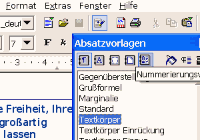
|
OpenOffice.org Writer ist eine voll ausgestattete
Textverarbeitung. Mit Hilfe von Navigator und Stylist ist es
kinderleicht, das Layout eines kompletten Dokumentes im Handumdrehen zu
ändern.
|
| Tabellenkalkulation |
|
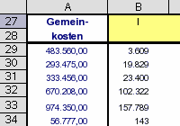
|
OpenOffice.org Calc bietet den vollen
Funktionsumfang einer Tabellenkalkulation einschließlich einer großen
Anzahl statistischer und wissenschaftlicher Funktionen, Pivottabellen
und Diagrammen.
|
| Präsentationen |
|
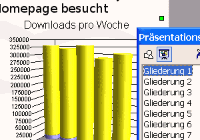
|
OpenOffice.org Impress ist ein umfangreiches
Präsentationswerkzeug, mit dem Sie Diagramme und Bilder in Ihrer
Arbeitsumgebung entwerfen und bearbeiten können.
|
| Zeichnungen und Diagramme |
|
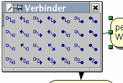
|
Mit OpenOffice.org Draw steht Ihnen ein
Zeichenwerkzeug zur Verfügung, das sowohl Vektor- als auch
Bitmapgrafiken unterstützt. Mit den vielseitigen Verbindern können Sie
ganz einfach komplexe Struktogramme oder Organisationsdiagramme erstellen.
|
| Datenzugriff |
|
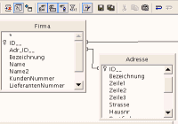
|
Mit den Datenquellenwerkzeugen von OpenOffice.org
können Sie ganz einfach auf Ihre Daten zugreifen, Analysen und Reports
erstellen oder Serienbriefe aus Ihrer Kundendatenbank generieren. Es
werden verschiedenste Open Source und kommerzielle Datenbanksysteme
unterstützt.
|
| Microsoft Office Kompatibilität |
|
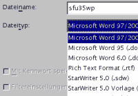
|
OpenOffice.org kann Microsoft Office Dateien
lesen und speichern. Dadurch können Anwender ihre Word-, Excel- oder
PowerPoint-Dateien auf der Plattform ihrer Wahl (u.a. Windows, Linux
oder Solaris) bearbeiten.
|
| PDF-Export mit einem Klick |
|
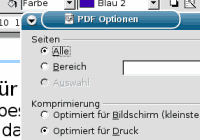
|
Mit OpenOffice.org 1.1 können Sie Ihre Dokumente
mit nur einem Klick in PDF-Dateien umwandeln, ohne die Software eines
weiteren Herstellers installieren zu müssen. Damit wird es
kinderleicht, Dokumente in einem Standardformat für nicht änderbare
Dokumente auszutauschen. Normalerweise wird für den Export von
PDF-Dateien recht teure Zusatzsoftware benötigt. Mit OpenOffice.org
erhalten Sie diese Möglichkeit gratis.
|
| Shockwave Flash Export (.SWF) |
| 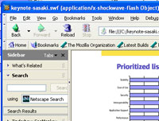 |
OpenOffice.org kann nun Präsentationen und
Zeichnungen in das Macromedia Flash - Format (.swf) exportieren. Dadurch
ist es nun möglich, Präsentationen in einem einfachen Web Browser zu
betrachten, der das Flash Plugin installiert hat. Sowohl Empfänger als
auch Nutzer von Flash - Präsentationen brauchen jetzt nicht mehr extra
einen speziellen Viewer zu installieren, um eine Präsentation zu
betrachten.
|
| Zugänglichkeit |
|
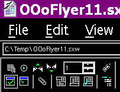
|
OpenOffice.org 1.1 kann nun von Menschen genutzt
werden, die z.B. sehbehindert sind. OpenOffice.org 1.1 bietet einen
kontrastreichen Modus, und zusammen mit zusätzlichen Programmen (siehe
http://www.sun.com/access/) ist
es auch möglich, spezielle Eingabegeräte zu nutzen. Eine Infoseite zum
Accessibility - Projekt finden Sie hier.
|
| Support für viele Sprachen |
|
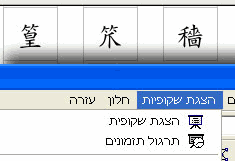
|
OpenOffice.org 1.1 führt neuartige
Funktionalität, wie etwa bidirektionales und vertikales Schreiben - wie
es in vielen Sprachen gebräuchlich ist - ein. Dies ermöglicht die
Übersetzung von OpenOffice.org 1.1 in japanisch, hebräisch und viele
andere Sprachen, die unterschiedliche Anforderungen an das Text-Layout
stellen. Außerdem verfügt das OpenOffice.org Projekt über eine
steigende Zahl von muttersprachlichen
Projekten, wo Nutzer Zugriff auf Informationen bezüglich
OpenOffice.org in ihrer eigenen Muttersprache haben.
|
| Open XML Datei Format |
|
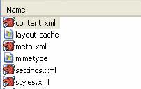 |
Das standardmäßige Dateiformat in OpenOffice.org
ist ein offenes XML Dateiformat, welches in einem 500 Seiten
umfassenden Dokument spezifiziert wurde. Jedes OpenOffice.org Dokument
besteht aus einem Zip-Archiv, welches einzelne XML Dateien für den
Inhalt, die Styles und die Metadaten enthält. OASIS benutzt das
Dateiformat von OpenOffice.org als Basis für die Entwicklung eines
industrieweiten Standards eines offenen Dokumentenformates für
Büroanwendungen. Für gewöhnliche Endanwender bedeutet dies, dass auf den
Inhalt von Dokumenten auch zugegriffen werden kann, ohne OpenOffice.org
zu benutzen.
|
| API und Dateiformat sind kompatibel StarOffice 7[tm] |
|
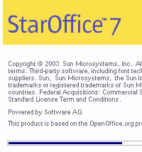 |
StarOffice
7[tm] basiert auf OpenOffice.org 1.1. Beide Anwendungsprogramme
sind sowohl API- als auch dateikompatibel. Sun Microsystems, Inc., die
Gründerin und Hauptsponsorin des Projektes, stellt den Support, das
Training und die Entwicklungstools für StarOffice 7. Mehr Einzelheiten
über die Beziehung und die Unterschiede zwischen OpenOffice.org und
StarOffice können in
dieser Gegenüberstellung auf der Webseite von sun.com nachgelesen werden.
Andere Büroanwendungen, die API- und dateiformatkompatibel zu
Openoffice.org sind, werden in Kürze auf der Openoffice.org - Webseite
veröffentlicht werden. Damit auch Ihre, auf Openoffice.org basierenden
/ zu Openoffice.org kompatiblen Produkte auf dieser Liste erscheinen,
nehmen Sie bitte Kontakt zu Erwin
Tenhumberg oder Louis
Suarez-Potts auf.
|
| Makro - Rekorder |
|
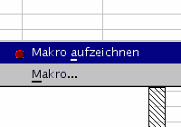
|
Der neue Makro - Rekorder zeichnet wiederkehrende
Aufgaben auf und automatisiert diese. Für anspruchsvollere
Programmaufgaben kann das OpenOffice.org Software Development Kit (SDK)
benutzt werden. Das SDK stellt Bibliotheken, Werkzeuge und
Dokumentationen für die Programmiersprachen Java, C++, Basic, OLE und
XML zur Verfügung. Das SDK muss einzeln heruntergeladen
werden.
|
| Add-ons Dritter |
|
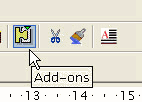 |
Das neue Add-on Konzept sowie auch das neue
Entwicklungs-Tool (das "pkgchk" Werkzeug) erlaubt es, auf einfache
Weise neue Komponenten für Openoffice.org zu entwickeln und Add-Ons
Dritter in eine existierende Openoffice.org - Installation einzubinden.
|
| XML Datei Filter |
|
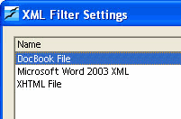
|
Der neue XML Datei-Filter erleichtert die
Integration neuer Import-/Exportfilter, die auf XSL - Umsetzungen
basieren. Ein beliebtes Anwendungsbeispiel für den XML Datei-Filter ist
die Unterstützung des neuen Microsoft Office 2003 XML Dateiformats.
|
| ActiveX Control |
|
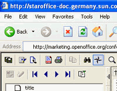
|
OpenOffice.org 1.1 bietet ActiveX control. Dies
erlaubt es den Nutzern, Dokumente im OpenOffice.org - Format unter
Windows in einem Browserfenster (Internet Explorer) zu betrachten.
ActiveX control kann außerdem in Anwendungen genutzt werden, die etwa
in Microsoft VisualBasic oder Borland Delphi entwickelt worden sind.
|
| Unterstützung von DocBook und PDA Dateiformaten |
|
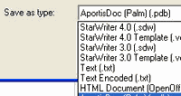
|
OpenOffice.org erlaubt es Anwendern,
OpenOffice.org-Dokumente in so beliebte Formate wie DocBook sowie
verschiedene Formate kleinerer PDAs wie etwa AportisDoc zu exportieren.
Dies ermöglicht den Transport der Dokumente auf den kleinen Palm Pilots
bzw. Pocket PC PDAs.
|
| MySQL Integration |
|
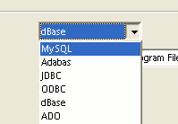
|
OpenOffice.org unterstützt nun die Datenbank
MySQL. Diese Opensource-Datenbank kann u.a. für die Erstellung von
Serienbriefen oder die Erstellung von Berichten genutzt werden. Die
Kombination von OpenOffice.org und MySQL (oder einer anderen
unterstützten Datenbank) ermöglicht die Erfüllung von Aufgaben, für die
man bisher Produkte wie Microsoft Access benutzt hat.
|